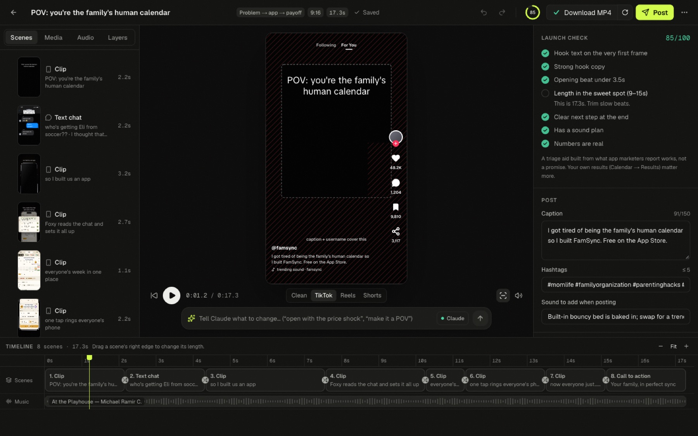

Shipreel turns your app into short videos built from the formats that actually go viral, with Claude and Codex doing the work. Then it posts them for you.
Free on GitHub. Runs on your Mac; your footage never leaves it.
Every format starts from real app videos with millions of views, taken apart frame by frame: hook timing, text size and position, cut rhythm, how the app shows up.
Raw screen demos, spoken text stories, mental-load posts, THAT-girl lists and carousels, made to look like a person posted them from their phone: TikTok’s own text styles, no mockups, no end cards.
A hook engine built from about 400 real viral hooks: 14 patterns, natural fill-ins from your brief and a 0–100 score, so every video opens like a post, not an ad. It never invents numbers.
Before it renders, Shipreel looks under each caption and moves it off busy UI, boxing white text on light screens. Cuts snap to the beat of royalty-free music beds.
Claude writes ideas and full videos from your brief, edits them when you ask in plain English, and can post them for you through the bundled Claude Code skill and MCP server.
Timeline, captions, transitions, taps, pop-outs and audio, previewed live inside TikTok, Reels and Shorts safe zones.
AirDrop to your iPhone, save to Photos, open the upload page with the caption copied, let Shipreel fill in TikTok Studio in Chrome for you, or auto-post through Upload-Post and Bluesky.
Made for FamSync, a family calendar on the App Store, from its own screens, a screen recording and royalty-free footage. Hooks picked by Shipreel’s hook engine; captions placed by the render-time fit pass. Tap a video for sound.
Who it’s for, the pain, the features. Drop in screenshots, a screen recording and your icon. Shipreel can read your project folder to fill this in.
Claude writes hooks in the formats that fit your app. Swipe right and the video is built, rendered and queued.
Change anything in the editor or by asking. Then AirDrop it to your phone, let Shipreel fill in the upload page, or schedule it and let it post.

Shipreel is a local app: the studio, the renderer and the agents all run on your machine.
brew install node ffmpeg)# get it git clone https://github.com/reidwcoleman/shipreel cd shipreel npm install # also fetches the music beds # run it npm run app # → http://localhost:4747 # or drive it from a terminal / agent npm run shipreel -- --help
Music beds come from Mixkit under its free license (fine for social videos and ads) and are downloaded on install rather than shipped in the repo. Stock footage you add from Pexels or Mixkit can be used the same way.
Videos render with Remotion, which is free for individuals and companies of up to three people; larger companies need a Remotion company license.
Shipreel never invents numbers: revenue, downloads, ratings and reviews only appear if you enter real ones.